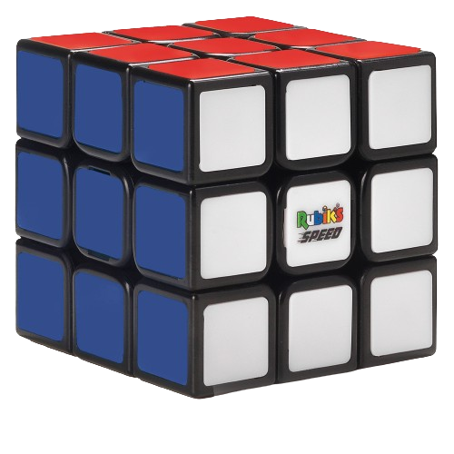
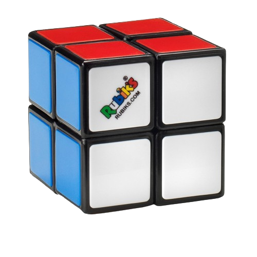
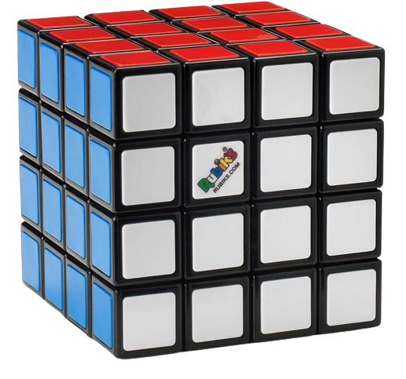
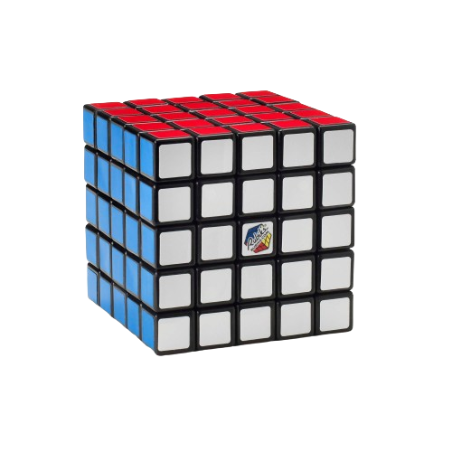
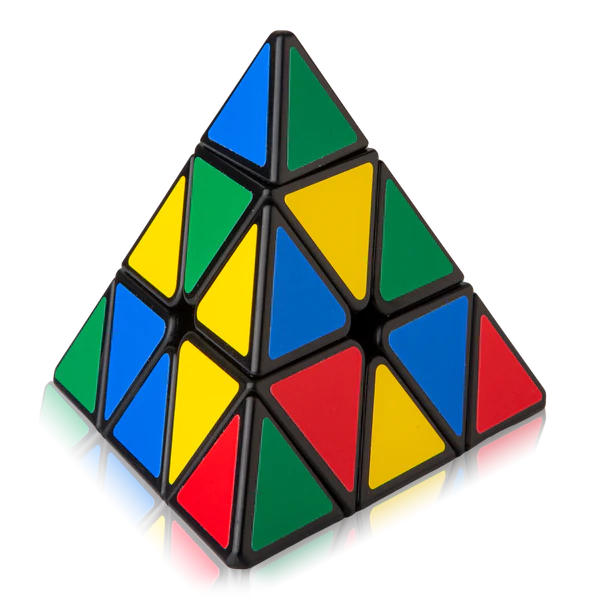

The Rubik's Cube is a 3-D combination puzzle invented in 1974 by Hungarian sculptor and professor of architecture Ernő Rubik. Originally called the Magic Cube, the puzzle was licensed by Rubik to be sold by Pentangle Puzzles in the UK in 1978, and then by Ideal Toy Corp in 1980 via businessman Tibor Laczi and Seven Towns founder Tom Kremer. The cube was released internationally in 1980 and became one of the most recognized icons in popular culture. It won the 1980 German Game of the Year special award for Best Puzzle. As of March 2021, over 450 million cubes had been sold worldwide, making it the world's bestselling puzzle game and bestselling toy. The Rubik's Cube was inducted into the US National Toy Hall of Fame in 2014.
Buy 3x3 Rubik's Cube Here The Pocket Cube (also known as the 2×2x2 Rubik's Cube or Mini Cube) is a 2×2×2 version of the Rubik's Cube. The cube consists of 8 pieces, all corners. In March 1970, Larry D. Nichols invented a 2×2×2 "Puzzle with Pieces Rotatable in Groups" and filed a Canadian patent application for it. Nichols's cube was held together with magnets. Nichols was granted U.S. patent 3,655,201 on April 11, 1972, two years before Rubik invented his Cube.
Buy 2x2 Rubik's Cube Here The Rubik's Revenge (also known as the 4×4×4 Rubik's Cube) is a 4×4×4 version of the Rubik's Cube. It was released in 1981. Invented by Péter Sebestény, the cube was nearly called the Sebestény Cube until a somewhat last-minute decision changed the puzzle's name to attract fans of the original Rubik's Cube. Unlike the original puzzle (and other odd-numbered puzzles like the 5×5×5 cube), it has no fixed faces: the center faces (four per face) are free to move to different positions.
Buy 4x4 Rubik's Cube Here The Professor's Cube (also known as the 5×5×5 Rubik's Cube and many other names, depending on manufacturer) is a 5×5×5 version of the original Rubik's Cube. It has qualities in common with both the 3×3×3 Rubik's Cube and the 4×4×4 Rubik's Revenge, and solution strategies for both can be applied.
Buy 5x5 Rubik's Cube Here The Pyraminx is a regular tetrahedron puzzle in the style of Rubik's Cube. It was made and patented by Uwe Mèffert after the original 3 layered Rubik's Cube by Ernő Rubik, and introduced by Tomy Toys of Japan (then the 3rd largest toy company in the world) in 1981.
Buy Pyraminx Here 